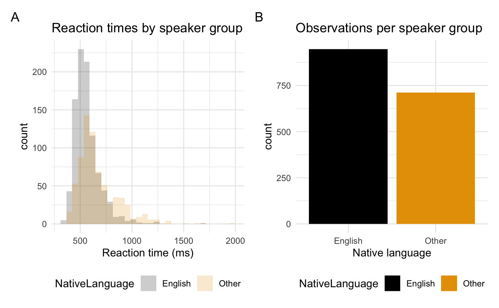
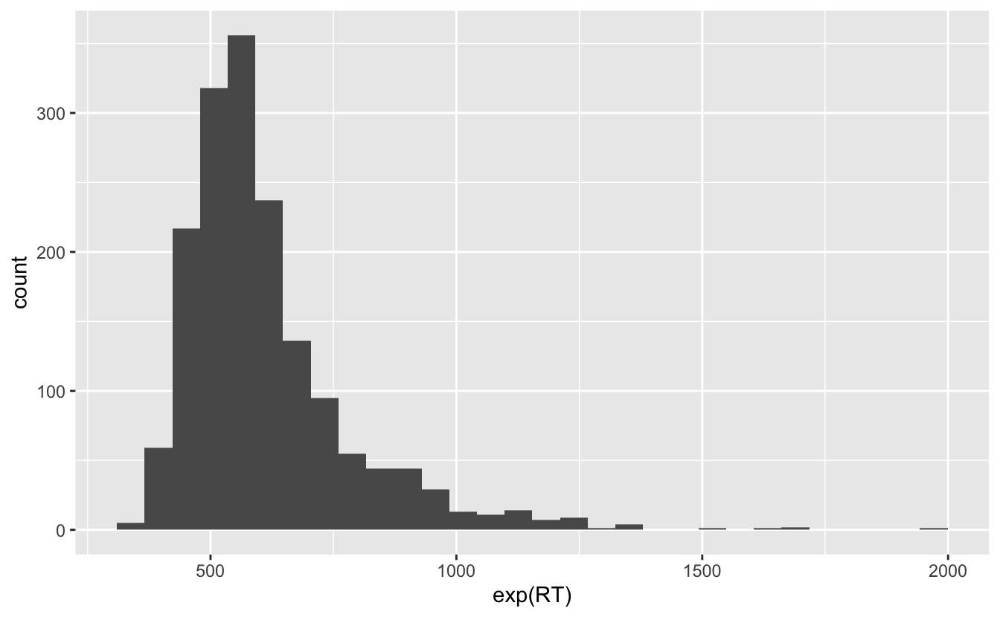
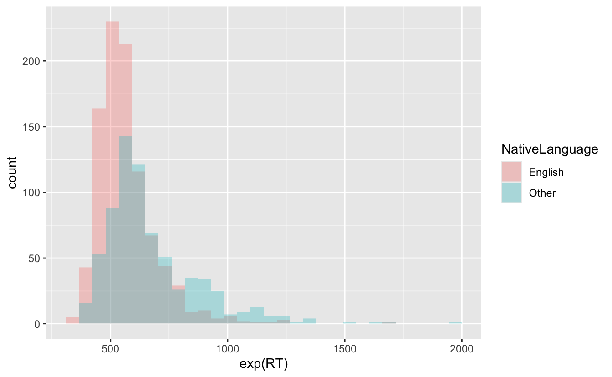
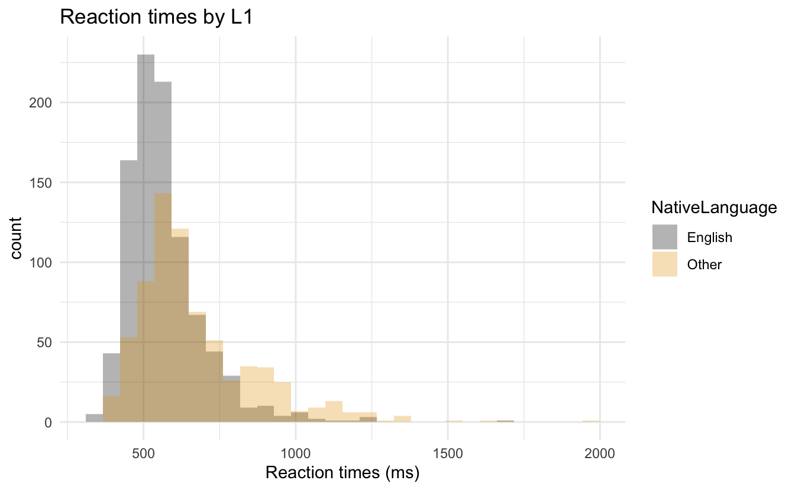

x <- c(1,2,3)
y <- sum(1,2,3)2 Datenvisualiserung 1
Visualisierung von Verteilungen
Wiederholung
Letzte Woche haben wir…
- R und RStudio installiert
- unser erstes R-Skript erstellt
- einfache Arithmetik mit Objekten und Vektoren durchgeführt
Wiederholung
Was enthalten die Vektoren
xundy?Das Objekt
xenthält1, 2, 3Das Objekt
yenthält ` 6 ``
Heutige Ziele
Heute werden wir lernen…
- was Datenframes sind
- den Unterschied zwischen kategorialen und kontinuierlichen Daten
- wie man Diagramme mit
ggploterstellt - die richtige Darstellung für unsere Daten auszuwählen
Endgültiges Ziel
- Unser heutiges Ziel ist es, die Daten wie folgt zu visualisieren
- Das Diagramm zeigt die Verteilung (
Anzahl) der Reaktionszeiten und der Muttersprache der Teilnehmer
- Das Diagramm zeigt die Verteilung (

Lust auf mehr?
Vorbereitung
In Ihrem RProject-Ordner…
- erstellen Sie einen neuen Ordner mit dem Namen
moodle- Laden Sie die Moodle-Materialien von heute herunter und speichern Sie sie dort
- Erstellen Sie einen neuen Ordner in
notesmit dem Namen02-datenviz1 - öffne ein neues
.RSkript- speichere es in dem neuen Ordner
2.0.0.1 Pakete
- Pakete laden (und installieren)
tidyverselanguageRggthemespatchwork
## in the CONSOLE: install packages if needed
install.packages("tidyverse")
install.packages("languageR")
install.packages("ggthemes") ## for customising our plots
install.packages("patchwork") ## plot layouts## Pakete laden
library(tidyverse)
library(languageR)
library(ggthemes)
library(patchwork)2.1 Datenrahmen
Datenrahmen sind eine Sammlung von Variablen, wobei
- jede Variable eine Spalte ist
- jede Zeile eine einzelne Beobachtung/ein einzelner Datenpunkt ist
- jede Zelle in einer Zeile verknüpft ist
Datenrahmen sind genau wie Tabellenkalkulationen, aber rechteckig
Verschiedene Wörter für Datenrahmen:
- Datenrahmen
- Datensatz
- Tibble (im
tidyverse)
2.1.1 Sprechen über Datensätze
- eine Variable: eine Menge, Qualität oder Eigenschaft, die man messen kann
- ein Wert: der Zustand einer Variablen, wenn man sie misst
- eine Beobachtung: eine Reihe von Messungen, die unter ähnlichen Bedingungen durchgeführt werden
- enthält mehrere Werte, die jeweils mit einer Variablen verbunden sind
- eine Beobachtung für eine einzelne Variable wird manchmal als Datenpunkt bezeichnet
- Tabellendaten sind eine Reihe von Werten, die jeweils mit einer Variablen und einer Beobachtung verbunden sind
- Tabellarische Daten sind “tidy”, wenn jeder Wert in einer eigenen Zelle, jede Variable in einer eigenen Spalte und jede Beobachtung in einer eigenen Zeile steht
2.1.2 Kategoriale und kontinuierliche Variablen
- Wie wir die Verteilung einer Variablen darstellen, hängt davon ab, welche Art von Daten sie repräsentiert: kategorisch oder numerisch
- Eine Variable ist kategorisch, wenn sie eine kleine Menge von Werten annehmen kann, die sich in Gruppen zusammenfassen lassen
- B. alt/jung, klein/groß, grammatikalisch/ungrammatikalisch, L1/L2-Sprecher
- eine Variable ist numerisch (d. h. quantitativ), wenn sie eine große Bandbreite an numerischen Werten annehmen kann
- und es sinnvoll wäre, zu addieren, zu subtrahieren, den Mittelwert zu berechnen usw.
- kann kontinuierlich sein (Dezimalpunkte sind sinnvoll, z. B. 1,5 cm)
- oder diskret (Dezimalpunkte sind nicht sinnvoll, z. B. 1,5 Kinder sind nicht sinnvoll)
- wir erstellen verschiedene Diagramme, je nachdem, welche Art von Variablen wir visualisieren wollen
2.2 Lexical Decision Task (LDT)
unser erster Datensatz enthält Daten aus einer lexikalischen Entscheidungsaufgabe
Bei der LDT drücken die Teilnehmer eine Taste, um anzugeben, ob ein Wort ein echtes Wort oder ein Pseudowort ist.
2.2.1 LDT-Variablen
- Die üblichen Variablen, die in einem Experiment zur lexikalischen Entscheidungsaufgabe erhoben werden, sind:
- Reaktionszeit
- Genauigkeit (richtig/falsch)
- Wortkategorie (z. B. real/pseudo, Nomen/Verb)
- Worthäufigkeit
- Zusätzliche Variablen, die erhoben werden könnten, sind:
- demografische Daten der Teilnehmer (z. B. Alter, L1/L2, Geschlecht)
2.3 lexdec Datensatz
languageRist ein Begleitpaket für das Lehrbuch Baayen (2008)- enthält linguistische Datensätze, z.B.
lexdec.
- enthält linguistische Datensätze, z.B.
- der
lexdec-Datensatz enthält Daten für eine lexikalische Entscheidungsaufgabe im Englischen- wir werden mit Variablen wie Reaktionszeiten und Genauigkeit arbeiten
2.3.1 lexdec-Variablen
- eine Liste einiger der Variablen ist in Tabelle 2.1 enthalten
df_lexdec: Lexikalische Entscheidungslatenzen, die von 21 Probanden für 79 konkrete englische Substantive erhoben wurden, mit Variablen, die mit dem Subjekt oder dem Wort verknüpft sind.
| Variable | Beschreibung |
|---|---|
| Subject | ein Faktor für die Probanden |
| RT | ein numerischer Vektor für die Reaktionszeit in Millisekunden |
| Trial | ein numerischer Vektor für den Rang des Versuchs in der Versuchsliste |
| Sex | ein Faktor mit den Ausprägungen F (weiblich) und M (männlich) |
| NativeLanguage | ein Faktor mit den Niveaus English und Other, der zwischen englischen Muttersprachlern und Nicht-Muttersprachlern unterscheidet |
2.3.2 LDT-Forschungsfragen
- bevor wir ein Experiment durchführen, haben wir Forschungsfragen, die wir mit den Daten beantworten wollen
- Wir werden uns heute mit der folgenden Frage beschäftigen:
- Unterscheiden sich die Reaktionszeiten zwischen Muttersprachlern und Nicht-Muttersprachlern?
- Wir werden uns heute mit der folgenden Frage beschäftigen:
2.3.3 Laden der Daten
- unsere Daten sind in dem Paket
lanaugeRverfügbar, das wir bereits geladen haben- um die Daten zu drucken, geben Sie einfach den Namen des Datensatzes ein und führen Sie ihn aus
- Unten sehen wir nur ein paar Variablen, aber Sie sollten mehr in Ihrer Konsole sehen
lexdec Subject RT Trial Sex NativeLanguage Correct PrevType PrevCorrect
1 A1 6.340359 23 F English correct word correct
2 A1 6.308098 27 F English correct nonword correct
3 A1 6.349139 29 F English correct nonword correct
4 A1 6.186209 30 F English correct word correct
5 A1 6.025866 32 F English correct nonword correct
6 A1 6.180017 33 F English correct word correct- Wie viele Variablen haben wir? Beobachtungen?
2.3.3.1 Daten als Objekt speichern
- Um die Daten in unserer Umgebung zu speichern, müssen wir ihnen einen Namen zuweisen
- Nennen wir es
df_lexdec, was soviel bedeutet wie “Datenrahmen lexikalische Entscheidung”.
- Nennen wir es
df_lexdec <- lexdec- jetzt sehen wir es in unserem Enrivonment
- Doppelklicken Sie darauf, um es im Editorfenster zu sehen.
2.3.4 Relevante Variablen
- Zu den Variablen, die wir haben, gehören:
- Subjekt: Teilnehmer-ID
- RT: protokollierte Reaktionszeiten
- NativeLanguage: die Muttersprache des Teilnehmers
- Word: welches Wort präsentiert wurde
- Class: ob das Wort ein Tier oder eine Pflanze war
Aufgabe 8.2:
?lexdec
Beispiel 2.1
Um herauszufinden, wofür die anderen Variablen stehen, führen Sie ?lexdec in der Konsole aus.
2.4 Erstellen von Plots mit ggplot2
- das
tidyverseist eine Sammlung von Paketen, die das Aufräumen und die Visualisierung von Daten erleichtern- wenn wir
tidyverseladen, wird diese Sammlung von Paketen automatisch geladen
- wenn wir
- das
ggplot2-Paket ist eintidyverse-Paket, das Plots in Schichten aufbaut
ggplot2 Schichten
2.4.1 Ebene 1: leere Leinwand
- die erste Ebene mit der Funktion
ggplot()ist wie eine leere Leinwand
ggplot(data = df_lexdec)2.4.2 Ebene 2: Ästhetik der Darstellung
- als nächstes teilen wir
ggplot()mit, wie unsere Variablen visuell dargestellt werden sollen- Wir fügen das “+” am Ende unserer Codezeile ein und verwenden in einer neuen Codezeile die Funktion “aes()”, um unsere Ästhetik zu definieren.
- Unsere erste Ästhetik bildet die Reaktionszeiten (RT) auf der x-Achse ab (der untere Teil der Grafik)
- wir wickeln die protokollierte
RTin die Funktionexp()ein, um RTs in Millisekunden zu erhalten (aus Gründen, die wir nicht diskutieren werden)
- wir wickeln die protokollierte
ggplot(data = df_lexdec) +
aes(x = exp(RT))
Aufgabe 2.2: Ästhetische Kartierung
Beispiel 2.2
Add the x-axis aesthetic.
2.4.3 Schicht 3: Hinzufügen von Beobachtungen
- wir sehen keine Beobachtungen (d.h. die Balken) in der Grafik, warum nicht?
- wir haben
ggplot()nicht gesagt, wie sie dargestellt werden sollen
- wir haben
- wir müssen ein Geom definieren: das geometrische Objekt, das ein Diagramm verwendet, um Daten darzustellen
- in
ggplot2beginnen die Geom-Funktionen mitgeom_ - wir beschreiben Diagramme oft in Bezug auf die Arten von Geomen, die sie verwenden, z.B. verwenden Balkendiagramme Balkengeome (
geom_bar()), Liniendiagramme Liniengeome (geom_line()), Punktdiagramme ein Punktgeom (geom_point()), usw.
- in
- Erzeugen wir unser Histogramm mit dem Geom
geom_histogram()
ggplot(data = df_lexdec) +
aes(x = exp(RT)) +
geom_histogram()
Hinweis
Wir erhielten die folgende Meldung, als wir geom_point() einschlossen:
stat_bin()mitbins = 30. Wählen Sie einen besseren Wert mitbinwidth.
Dies sagt uns nur etwas über die Breite unserer Balken: jeder Balken repräsentiert einen Bereich möglicher Reaktionszeitwerte + bins = 30 bedeutet einfach, dass es 30 Balken gibt, wir können dies ändern und mehr oder weniger Balken haben, indem wir z.B. bins = 20 oder bins = 100 in geom_histogram() einfügen
Code
ggplot(
data = df_lexdec,
mapping = aes(x = exp(RT))
) +
labs(title = "with geom_histogram(bins = 20)") +
geom_histogram(bins = 20) +
ggplot(
data = df_lexdec,
mapping = aes(x = exp(RT))
) +
labs(title = "with geom_histogram(bins = 100)") +
geom_histogram(bins = 100)2.4.4 Hinzufügen von Ästhetik
- Es ist nützlich, die Verteilung der Reaktionszeiten im Allgemeinen zu sehen.
- aber wir wollen normalerweise Gruppen vergleichen
- B. Unterschiede zwischen Muttersprachlern und Nicht-Muttersprachlern oder zwischen verschiedenen Wortarten
- Wir haben auch die Muttersprache als Variable, wie könnten wir diese in unserem Diagramm visualisieren?
Code
ggplot(
data = df_lexdec,
aes(x = exp(RT), fill = NativeLanguage)
) +
geom_histogram()- wir sehen die roten und die blauen Balken, aber ist das blaue Histogramm über das rote geschichtet?
- oder sind die roten Balken über den blauen Balken gestapelt?
- Es ist letzteres
- stellen wir es so ein, dass das blaue Histogramm über dem roten liegt
Code
ggplot(
data = df_lexdec,
aes(x = exp(RT))
) +
labs(title = "No grouping") +
geom_histogram() +
ggplot(
data = df_lexdec,
aes(x = exp(RT), fill = NativeLanguage)
) +
labs(title = "Stacked") +
geom_histogram() +
ggplot(
data = df_lexdec,
aes(x = exp(RT), fill = NativeLanguage)
) +
labs(title = "Layered: position = \"identity\"") +
geom_histogram(position = "identity") +
plot_layout(guides = "collect") & theme(legend.position = 'bottom') 2.4.5 Globale und lokale Ästhetik
- in unserer endgültigen Darstellung ist die Farbe der Histogramme leicht transparent
- Wir können dies steuern, indem wir das Argument
alpha = 0.3zugeom_histogram()hinzufügen. - alpha kann jeden anderen Wert zwischen 0 und 1 annehmen.
- Wir können dies steuern, indem wir das Argument
Aufgabe 2.3: Transparenz
Beispiel 2.3
Spielen Sie mit der Transparenz des Histogramms geom. Wählen Sie den von Ihnen bevorzugten Alpha-Wert. Die Ausgabe sollte in etwa so aussehen:

2.4.6 Anpassen unseres Plots
wir können unsere Achsen- und Legendenbeschriftungen verbessern und auch Titel hinzufügen, indem wir die Funktion
labs()verwendenWir können auch die Funktion
scale_fill_colorblind()aus dem Paketggthemesverwenden.- dies erzeugt farbenblind-sichere Farben
Wir werden auch die Funktion
theme_minimal()aus dem Paketggplot2verwenden; was bewirkt diese Funktion?Versuchen Sie, Ihrem Diagramm Folgendes hinzuzufügen
- Ändern Sie die Beschriftungen entsprechend
- und fügen Sie dem Code sinnvolle Kommentare mit
#hinzu
labs(title = "Plot title",
x = "x-axis label",
y = "y-axis label") +
scale_fill_colorblind() +
theme_minimal()2.4.7 Kommentar
- Der Code und die Darstellung sollten in etwa so aussehen:
## histogram of reaction times by native language
ggplot(data = df_lexdec) +
aes(x = exp(RT), fill = NativeLanguage) + ## set aesthetics
labs(title = "Reaction times by L1",
x = "Reaction times (ms)") +
geom_histogram(position = "identity", alpha = 0.3) +
scale_fill_colorblind() + ## make fill colorblind friendly
theme_minimal() ## set plot theme
2.4.8 Speichern von Plots
- Wir können Diagramme in unserer Umgebung speichern, genau wie wir Zahlen und Daten als Objekte speichern können.
- Sie können Objekte beliebig benennen
- aber es ist ratsam, den Namen sinnvoll zu gestalten (z.B. nicht
fig1oderxyz)
- Nennen wir diese Grafik
fig_lexdec_rt, für “figure lexical decision task reaction times”.
Aufgabe 2.4: Figur als Objekt speichern
Beispiel 2.4
- Speichern Sie unsere endgültige Darstellung als Objekt mit dem Namen
fig_lexdec_rt.
2.4.9 Balkendiagramme
- Kopieren Sie den Code für Ihr Histogramm
- Nehmen Sie die folgenden Änderungen vor, um unser Balkendiagramm darzustellen
- Entfernen Sie die Namenszuweisung (
fig_lexdec_rt) - auf der x-Achse wollen wir
NativeLanguage - Ersetzen Sie
geom_histogram()durchgeom_bar()- Entfernen Sie die Argumente für das Histogramm (kein
positionoderalpha)
- Entfernen Sie die Argumente für das Histogramm (kein
- ändern Sie die Beschriftungen entsprechend
- Entfernen Sie die Namenszuweisung (
- Speichern Sie das Diagramm als Objekt mit einem aussagekräftigen Namen (z.B.
fig_lexdec_l1)
- sollte das Diagramm in etwa so aussehen:
2.4.10 Kombinieren von Plots
- Ein Grund, Ihre Darstellung als Objekt zu speichern, ist, dass wir sie später aufrufen können
- d.h. Sie können den Plot an einer Stelle in Ihrem Dokument erstellen, sich aber entscheiden, ihn erst im gerenderten Bericht weiter unten zu drucken
- ein weiterer Grund ist, dass wir mehrere Diagramme kombinieren können
- Dies kann mit einer Vielzahl von Paketen geschehen
- Versuchen wir es mit dem Paket
patchwork- Benutze
+um zwei Plots nebeneinander zu verbinden - oder
/, um sie übereinander darzustellen
- Benutze
2.4.10.1 Kombinieren von Plots mit +
fig_lexdec_rt + fig_lexdec_l12.4.10.2 Kombinieren von Plots mit /
fig_lexdec_rt / fig_lexdec_l12.5 Entscheidung für ein Geom
- Warum verwenden wir ein Histogramm für die Reaktionszeit und ein Balkendiagramm für die Muttersprache?
- Um welche Arten von Variablen handelt es sich?
- Reaktionszeit ist kontinuierlich
- Muttersprache ist eine kategoriale Variable
- Wir verwenden Histogramme, um die Verteilungen von kontinuierlichen Variablen zu visualisieren.
- Wir verwenden Balkendiagramme, um Verteilungen von kateogrischen Variablen zu visualisieren.
- Wenn wir wissen, was wir visualisieren wollen (z. B. Verteilungen) und welche Art von Variable wir haben (d. h. kontinuierlich, kategorial), können wir entscheiden, welche Art von Diagramm wir erstellen wollen.
- Oft ist es eine gute Idee, die Darstellung auf Papier zu zeichnen, bevor man in R beginnt (ich mache das auch oft).
Heutige Ziele
Heute haben wir gelernt…
- was Datenrahmen sind
- den Unterschied zwischen kategorialen und kontinuierlichen Daten
- wie man Diagramme mit
ggploterstellt - die richtige Darstellung für unsere Daten auszuwählen
2.6 Weitere Übungen
Weitere Übungen zu diesem Kapitel finden Sie in Kapitel A.2.
Session Info
Hergestellt mit R version 4.4.0 (2024-04-24) (Puppy Cup) und RStudioversion 2023.3.0.386 (Cherry Blossom).
sessionInfo()R version 4.4.0 (2024-04-24)
Platform: aarch64-apple-darwin20
Running under: macOS Ventura 13.2.1
Matrix products: default
BLAS: /Library/Frameworks/R.framework/Versions/4.4-arm64/Resources/lib/libRblas.0.dylib
LAPACK: /Library/Frameworks/R.framework/Versions/4.4-arm64/Resources/lib/libRlapack.dylib; LAPACK version 3.12.0
locale:
[1] en_US.UTF-8/en_US.UTF-8/en_US.UTF-8/C/en_US.UTF-8/en_US.UTF-8
time zone: Europe/Berlin
tzcode source: internal
attached base packages:
[1] stats graphics grDevices datasets utils methods base
other attached packages:
[1] magick_2.8.3 kableExtra_1.4.0 knitr_1.46 patchwork_1.2.0
[5] ggthemes_5.1.0 languageR_1.5.0 lubridate_1.9.3 forcats_1.0.0
[9] stringr_1.5.1 dplyr_1.1.4 purrr_1.0.2 readr_2.1.5
[13] tidyr_1.3.1 tibble_3.2.1 ggplot2_3.5.1 tidyverse_2.0.0
loaded via a namespace (and not attached):
[1] utf8_1.2.4 generics_0.1.3 renv_1.0.7 xml2_1.3.6
[5] stringi_1.8.3 hms_1.1.3 digest_0.6.35 magrittr_2.0.3
[9] evaluate_0.23 grid_4.4.0 timechange_0.3.0 fastmap_1.1.1
[13] rprojroot_2.0.4 jsonlite_1.8.8 fansi_1.0.6 viridisLite_0.4.2
[17] scales_1.3.0 cli_3.6.2 rlang_1.1.3 munsell_0.5.1
[21] withr_3.0.0 yaml_2.3.8 tools_4.4.0 tzdb_0.4.0
[25] colorspace_2.1-0 here_1.0.1 pacman_0.5.1 vctrs_0.6.5
[29] R6_2.5.1 lifecycle_1.0.4 htmlwidgets_1.6.4 pkgconfig_2.0.3
[33] pillar_1.9.0 gtable_0.3.5 Rcpp_1.0.12 glue_1.7.0
[37] systemfonts_1.0.6 highr_0.10 xfun_0.43 tidyselect_1.2.1
[41] rstudioapi_0.16.0 farver_2.1.1 htmltools_0.5.8.1 rmarkdown_2.26
[45] svglite_2.1.3 labeling_0.4.3 compiler_4.4.0